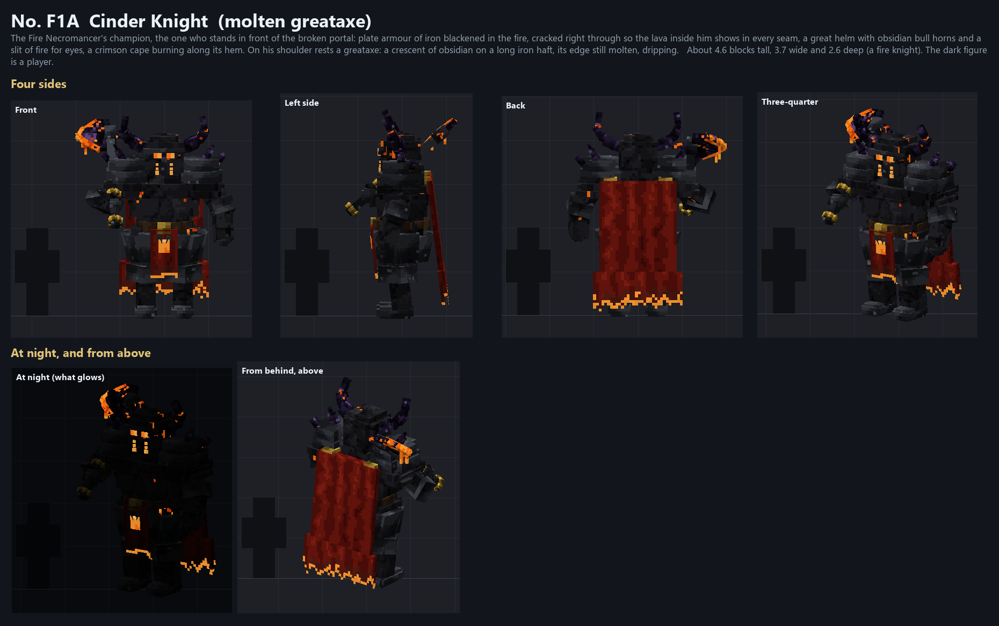
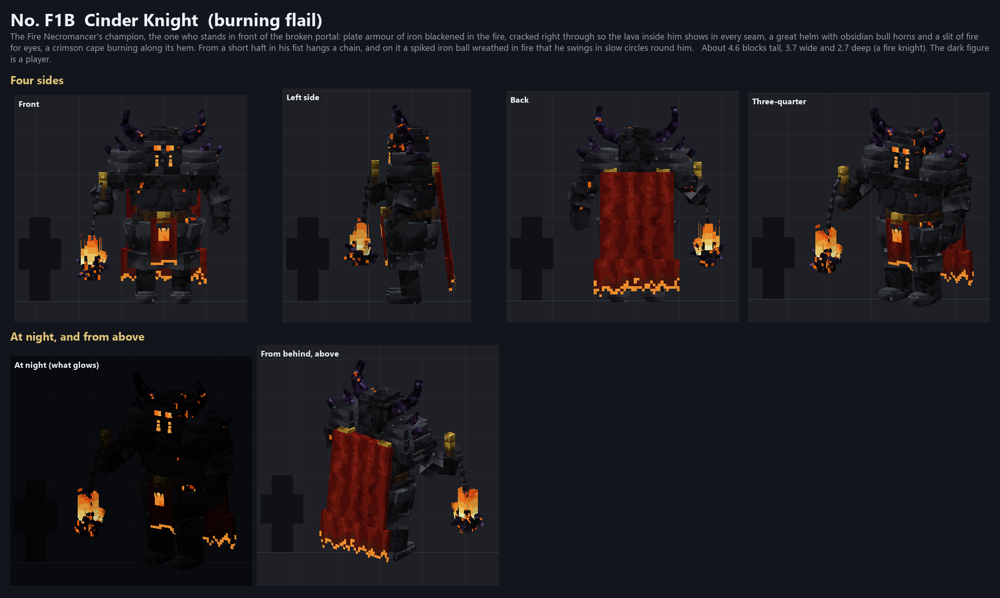
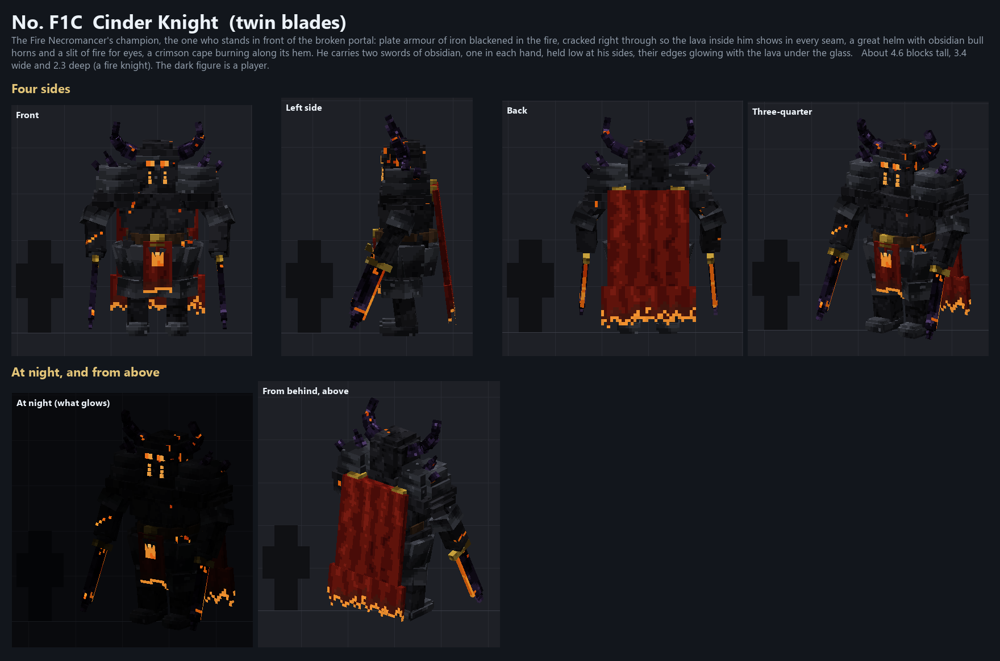
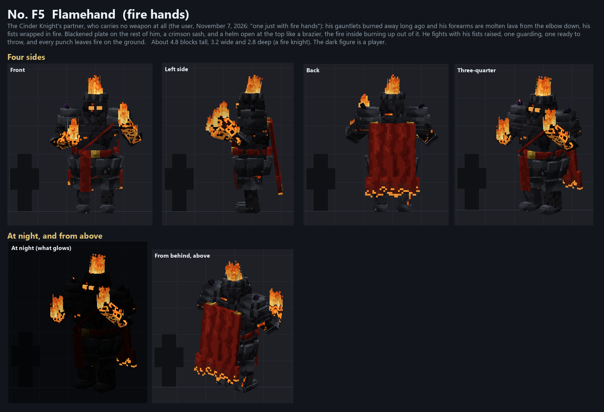
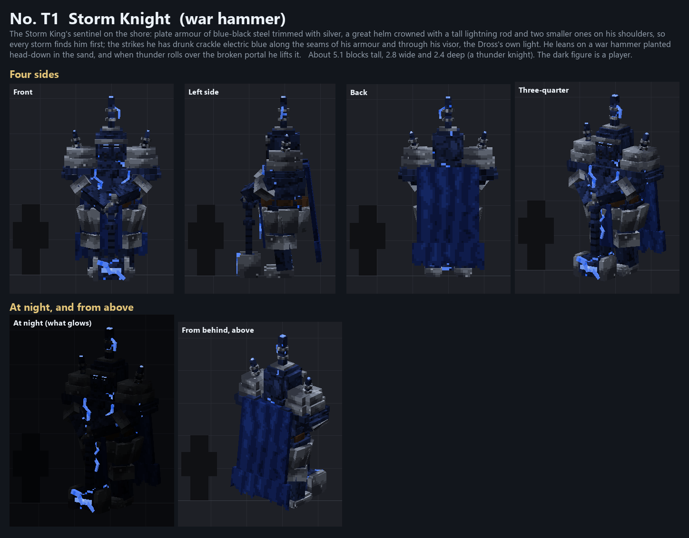
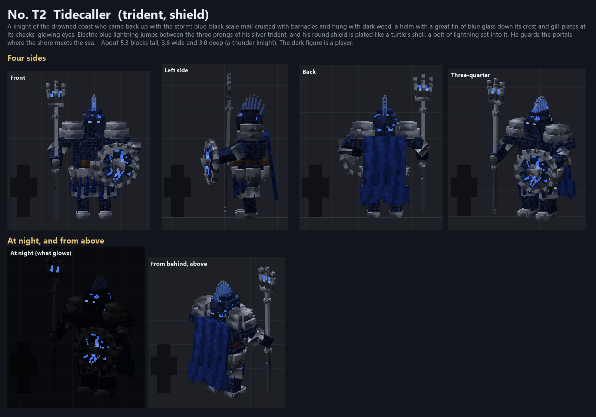
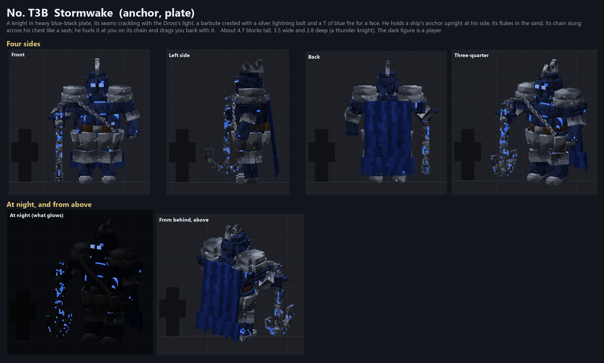
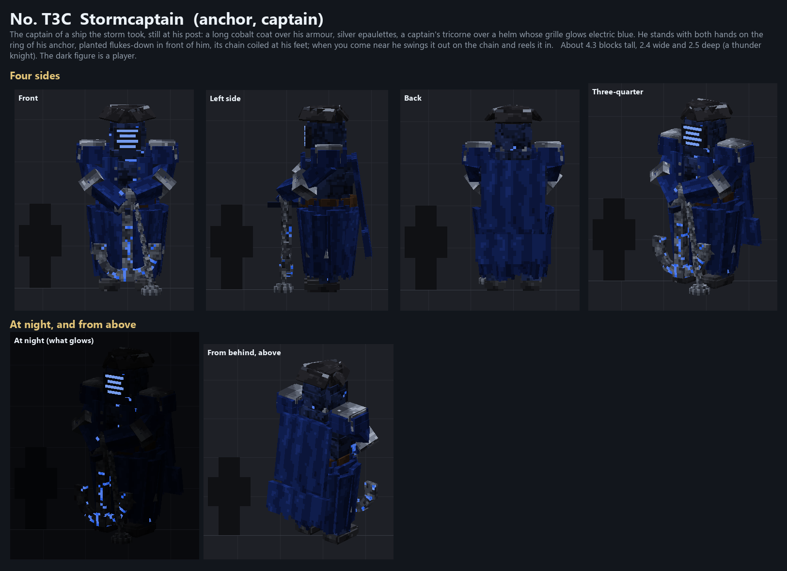
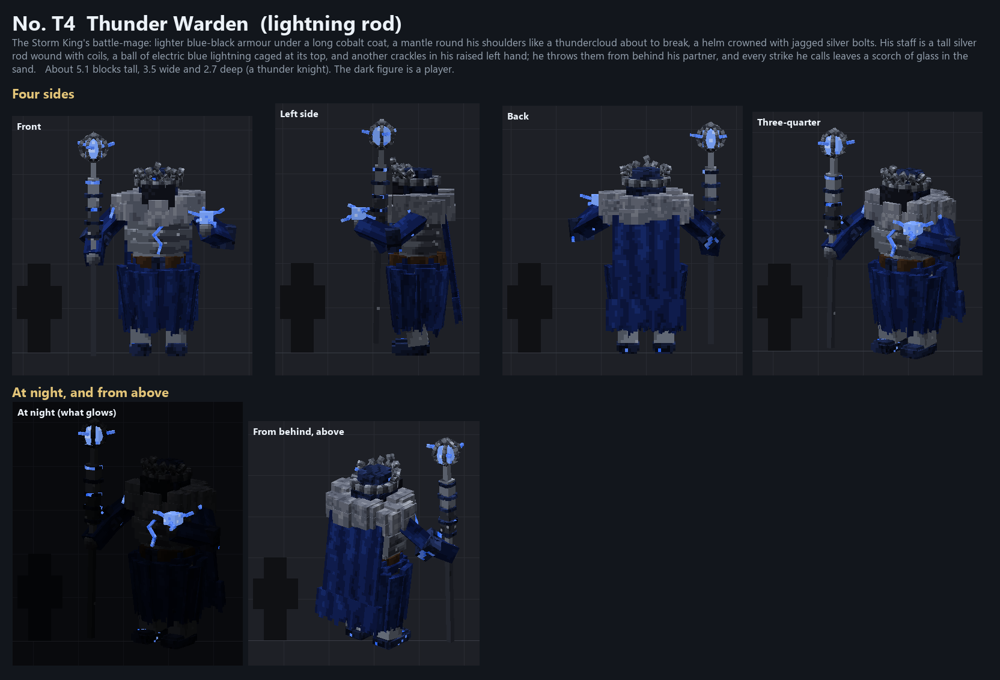
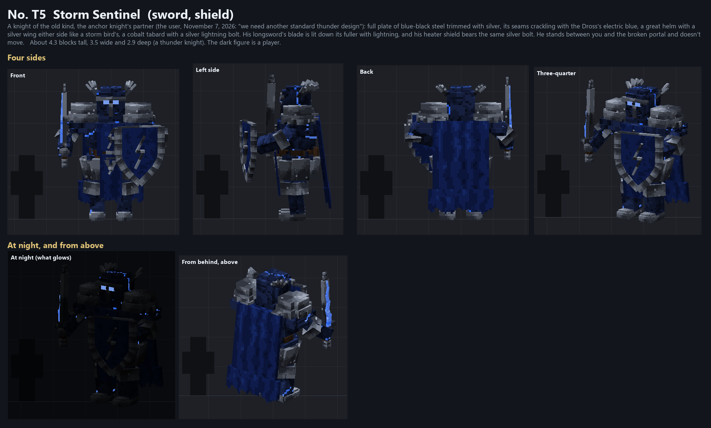

Two knights of each element will guard a broken portal in that element's biomes in the Overworld (the user's plan). Round 2 (November 7, 2026): ice's pair is the Thawed Soldiers (9C and 9D, the Rimefall gallery), poison's P1 and P3, earth's E3 and E4; fire's F1 (pick his weapon) and F5; thunder's T3 (pick his design) and a partner. Round 1 is archived in round1/. Looks only. In the game: /dross showcase knights.
The user's pair (November 7, 2026): P1 Blight Warden and P3 Sporebound, in Sir Mildew's style (P2 Plague Herald archived in round1/).
Sir Mildew's sworn brother, who took up the staff when his sword rusted away: the same plate armour furred with mould, a tall pointed helm with a curtain of rotten mail and Blightcaps sprouting from its sides, a cape eaten to rags. His staff of black, twisted wood is crowned with an iron cage round a glass globe of glowing poison that drips and hisses; his left hand drips with it too. He's the one who poisons the ground round the broken portal.

What's left of a knight the Blight took for its own: a great Blightcap has grown out of his back, its stem arching over his shoulders so its rotten red cap hangs over his helm like a hood. Mycelium threads glow between his plates, his barbute has split open and spores glow inside it, and he carries a rusted war scythe with bracket fungi along its blade. He doesn't speak; the mushroom breathes for him.

F1 Cinder Knight's look, which the user kept, with three weapons to pick from (A greataxe, B burning flail, C twin blades), and his partner F5 Flamehand, who fights with fire hands (F2-F4 archived in round1/).
The Fire Necromancer's champion, the one who stands in front of the broken portal: plate armour of iron blackened in the fire, cracked right through so the lava inside him shows in every seam, a great helm with obsidian bull horns and a slit of fire for eyes, a crimson cape burning along its hem. On his shoulder rests a greataxe: a crescent of obsidian on a long iron haft, its edge still molten, dripping.

The Fire Necromancer's champion, the one who stands in front of the broken portal: plate armour of iron blackened in the fire, cracked right through so the lava inside him shows in every seam, a great helm with obsidian bull horns and a slit of fire for eyes, a crimson cape burning along its hem. From a short haft in his fist hangs a chain, and on it a spiked iron ball wreathed in fire that he swings in slow circles round him.

The Fire Necromancer's champion, the one who stands in front of the broken portal: plate armour of iron blackened in the fire, cracked right through so the lava inside him shows in every seam, a great helm with obsidian bull horns and a slit of fire for eyes, a crimson cape burning along its hem. He carries two swords of obsidian, one in each hand, held low at his sides, their edges glowing with the lava under the glass.

The Cinder Knight's partner, who carries no weapon at all (the user, November 7, 2026: "one just with fire hands"): his gauntlets burned away long ago and his forearms are molten lava from the elbow down, his fists wrapped in fire. Blackened plate on the rest of him, a crimson sash, and a helm open at the top like a brazier, the fire inside burning up out of it. He fights with his fists raised, one guarding, one ready to throw, and every punch leaves fire on the ground.

All in the Dross's electric blue now (the user: 'it needs to be blue to reflect the Dross'). T3, the anchor knight, in three designs to pick from (he'll throw his anchor on its chain and pull it back), and his partner: T5 Storm Sentinel, a standard knight, or T1, T2 or T4 redone in blue.
The Storm King's sentinel on the shore: plate armour of blue-black steel trimmed with silver, a great helm crowned with a tall lightning rod and two smaller ones on his shoulders, so every storm finds him first; the strikes he has drunk crackle electric blue along the seams of his armour and through his visor, the Dross's own light. He leans on a war hammer planted head-down in the sand, and when thunder rolls over the broken portal he lifts it.

A knight of the drowned coast who came back up with the storm: blue-black scale mail crusted with barnacles and hung with dark weed, a helm with a great fin of blue glass down its crest and gill-plates at its cheeks, glowing eyes. Electric blue lightning jumps between the three prongs of his silver trident, and his round shield is plated like a turtle's shell, a bolt of lightning set into it. He guards the portals where the shore meets the sea.

He walked out of the sea after the storm that sank his ship: heavy riveted armour of blue-black steel wrapped in rope and crusted with barnacles, two air tanks on his back, and a great round diving helm whose porthole glows with the electric blue lightning trapped inside it. He carries the wreck's anchor on his shoulder, its chain wound round his forearm: he throws it at you and hauls it back.

A knight in heavy blue-black plate, its seams crackling with the Dross's light, a barbute crested with a silver lightning bolt and a T of blue fire for a face. He holds a ship's anchor upright at his side, its flukes in the sand, its chain slung across his chest like a sash; he hurls it at you on its chain and drags you back with it.

The captain of a ship the storm took, still at his post: a long cobalt coat over his armour, silver epaulettes, a captain's tricorne over a helm whose grille glows electric blue. He stands with both hands on the ring of his anchor, planted flukes-down in front of him, its chain coiled at his feet; when you come near he swings it out on the chain and reels it in.

The Storm King's battle-mage: lighter blue-black armour under a long cobalt coat, a mantle round his shoulders like a thundercloud about to break, a helm crowned with jagged silver bolts. His staff is a tall silver rod wound with coils, a ball of electric blue lightning caged at its top, and another crackles in his raised left hand; he throws them from behind his partner, and every strike he calls leaves a scorch of glass in the sand.

A knight of the old kind, the anchor knight's partner (the user, November 7, 2026: "we need another standard thunder design"): full plate of blue-black steel trimmed with silver, its seams crackling with the Dross's electric blue, a great helm with a silver wing either side like a storm bird's, a cobalt tabard with a silver lightning bolt. His longsword's blade is lit down its fuller with lightning, and his heater shield bears the same silver bolt. He stands between you and the broken portal and doesn't move.

The user's pair (November 7, 2026): E3 Geode Knight and E4 Rockfall Knight (E1 Graven Knight and E2 Crag Bulwark archived in round1/).
A miner of the deep roots who dug too far and came back up changed: amethyst has grown right through his dark armour, clusters of glowing crystal breaking out of his shoulders, back and helm like a geode cracked open. He carries a war pick over his shoulder, its iron head tipped with a spike of amethyst, and the crystals on him ring when he swings it.

A knight of the green hills, the Earth General's thrower: rough unhewn stone armour grown over with moss, meadow flowers sprouting from its cracks, a mane of moss down the back of his helm. He needs no weapon: he holds a mossy boulder high over his head in both hands, and the first thing anyone near the broken portal knows of him is the boulder landing.